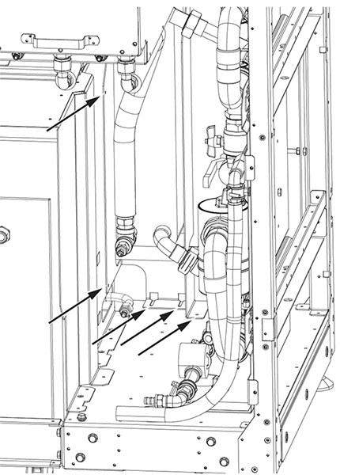
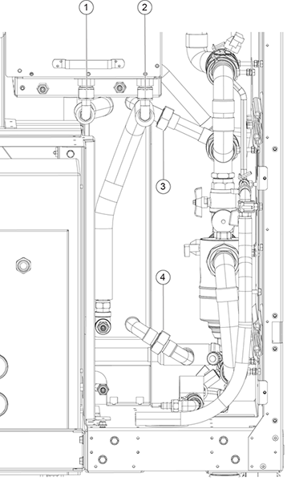
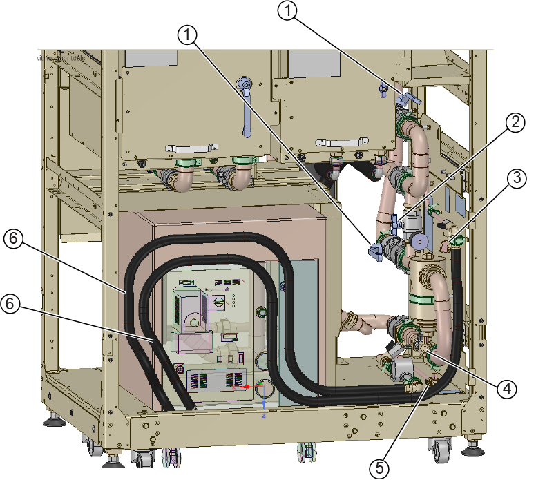
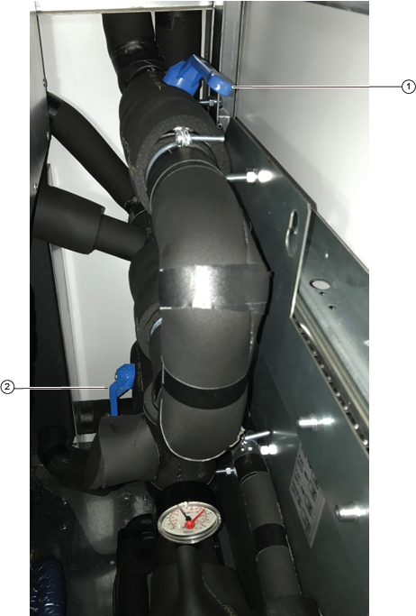
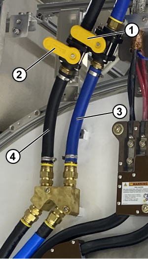
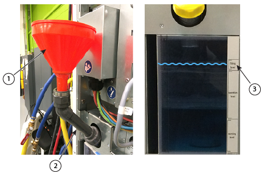
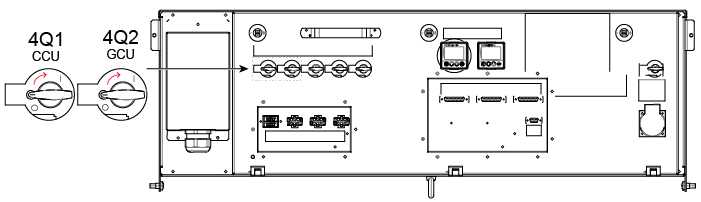

Installing the Gradient Cooling Unit (GCU) heat exchanger
Steps on how to install a replacement Gradient Cooling Unit (GCU) heat exchanger.
Prerequisites
Tools and test equipment
Item
Quantity
Part number
Manufacturer
Nonmagnetic Titanium Service Tool Kit, Small Set
1
5113258
-
20L Draining Tank
1
-
-
150 mm Funnel
1
-
-
Consumables
Item
Quantity
Part number
Manufacturer
Towels
As needed
-
-
Replacement parts
Item
Quantity
Part number
Manufacturer
Gradient Cooling Unit (GCU) Heat Exchanger FRU
1
5750161
Dimplex DE
Procedure
Attach the new GCU heat exchanger to the sheet metal part.
Install the heat exchanger into the cabinet and attach it with screws at the five locations shown using an 8 mm hex head wrench.
Figure 1. Sheet metal screw locations

New flat gaskets are provided for positions 3 and 4. Flat gaskets are not needed for positions 1 and 2. Secure the connections at points 1, 2, 3, and 4.
Figure 2. GCU heat exchanger connections

Insulate the GCU heat exchanger plumbing connections at positions 3 and 4 with the insulation provided.
Make sure there is enough available coolant near the ICC.
Note The coolant fluid is dyed for easy detection of leaks. This also helps distinguish between a leak and any abnormal condensation on the hoses.
Close the FPU drain, city water supply, and city water return valves (if they are open).
Figure 3. Valve locations

Item
Description
Item
Description
1
FPU supply and return valves (2)
4
FPU drain valve
2
Bypass valve
5
City water return valve
3
City water supply valve
6
Cryo compressor hoses (2)
Open both the facility supply and return valves using the blue handles.
Figure 4. Facility plumbing unit (FPU) water return valves

Item
Description
1
Facility water return valve
2
Facility water supply valve
Open the GCU secondary supply and return valves at the rear of the magnet.
Figure 5. Gradient coil coolant water supply and return lines

1
Supply shutoff valve
2
Return shutoff valve
3
Supply line (blue pipe)
4
Return line (black pipe)
Refill the GCU using the tank funnel extension.
Note The GCU tank contains about 17L (4.5 gal).
Figure 6. Filling the coolant

1
Funnel
2
Tank funnel extension
3
Tank filling level indicator
Unscrew the cap from the tank.
Connect the funnel extension to the tank fill port and insert the funnel.
Fill the tank until the coolant level is within the filling level on the tank indicator.
Start the pump by turning the GCU (4Q2) circuit breaker to the ON position.
Figure 9. CCU and GCU power on

Result
The pump will draw coolant from the reservoir and begin filling the system.
Monitor the coolant level in the tank.
If the coolant level falls below the operation level, stop the pump by turning the circuit breaker to the OFF position. Examine connections for leaks and add more coolant as needed to reach the filling level. Restart the pump and repeat this step as needed.
Note The pump may stop on its own during early filling due to insufficient flow. This is normal.
If (after 5 to 10 minutes) the coolant level remains the same and no air bubbles are visible in the tank, stop the pump by turning the circuit breaker to the OFF position.
Move the GCU filling valve to the operation position.